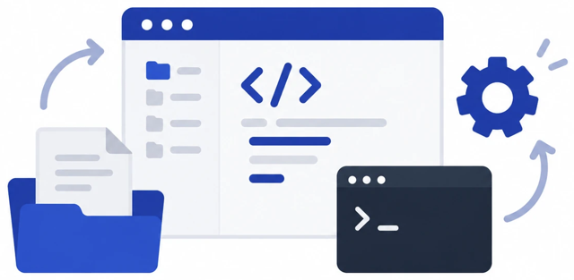
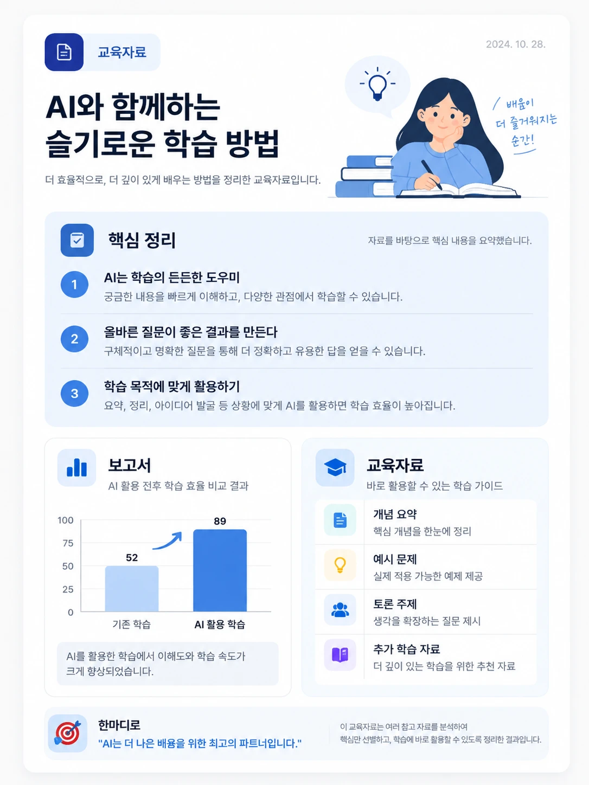
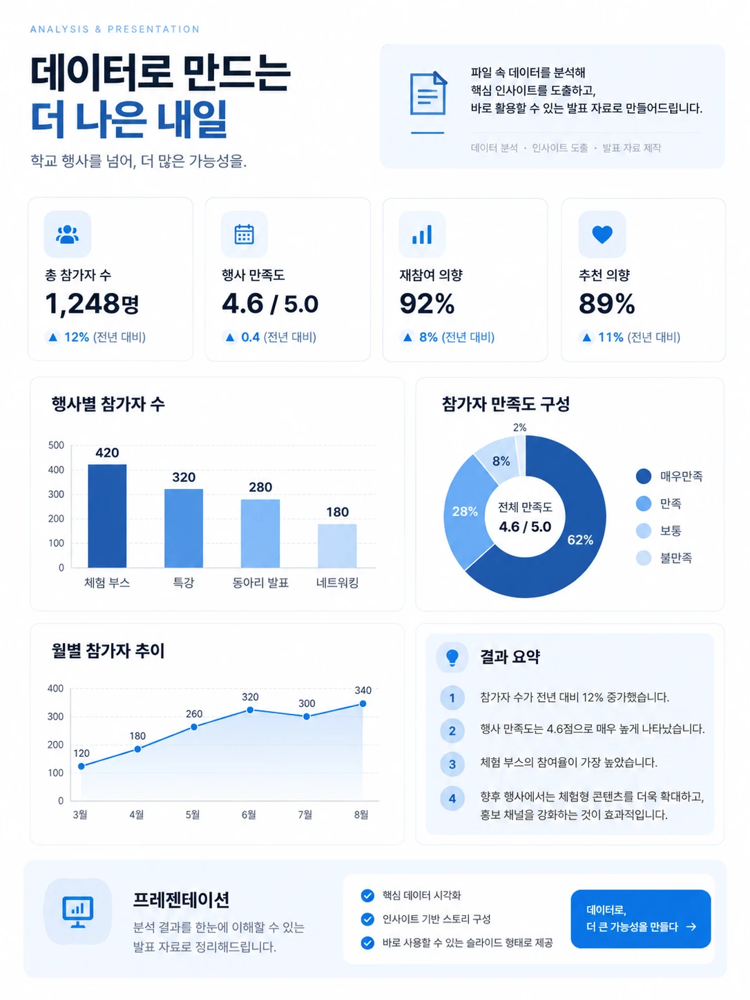

내가 만든 앱의 모든 코드와 수정 이력이 안전하게 보관되고
버전이 관리되는 온라인 저장소입니다. 구글 계정 연동으로 간편하게 가입합니다.
보안 핵심 꿀팁
비서가 코드를 업로드할 때 기본값이 Public(공개)일 수 있습니다.
나만의 아이디어가 유출되지 않도록 반드시 지시하세요.
PROMPT
“혹시 깃허브에 퍼블릭으로 반영되어 있으면
프라이빗(Private)으로 바꿔줘.”
구글 계정 연동 가입 → 30초
업로드 직후 공개 범위 한 번 더 확인
06 · Vercel
Vercel (URL 주소 생성기)
코드를 세상 사람들이 스마트폰으로 접속할 수 있는
실제 웹사이트 주소로 감싸주는 호스팅 서비스입니다.
필수 체크리스트
GitHub 계정으로 연동 가입 (Continue with GitHub)
Hobby / Personal (무료 버전) 선택
이름은 영문으로 기입
결제나 복잡한 설정 팝업이 뜨면 과감히 스킵(Skip)
GitHub Vault
코드 보관
Vercel Build
자동 배포 · 포장
.vercel.app
누구나 접속 가능한 주소
07 · Supabase
Supabase (유저 데이터 그릇)
역할
회원가입, 로그인, 설문조사 등 사용자의 입력을 실시간으로 저장하고 관리해야 하는
‘진짜 앱’을 만들 때 필수적인 데이터베이스입니다.
회원가입로그인설문 · 기록
2
무료 프로젝트 한도
회원가입 후 생성 가능 개수
무료 사용 구간추가 생성 시 유료
과금 주의사항
회원가입 후 생성되는 무료 프로젝트는 최대 2개입니다.
비밀번호 설정, 리전(Region) 선택 등 복잡한 프로젝트 생성 과정은 스킵해도 무방합니다.
API 키 결제 유도 창이 뜨면 일단 무시하고 진행하세요.
지금 단계의 목표는 계정 생성까지. 세부 설정은 AI 비서가 처리합니다.
08 · 마스터 프롬프트
모든 생태계를 한 번에 작동시키는 마스터 프롬프트
PROMPT INPUT
내가 만들고 싶은 앱에 대한 상세한 설명과 요구사항을 작성한 뒤…
완성되면 직접 GitHub에 업로드하고,
Supabase 데이터베이스를 연동한 뒤
Vercel에 배포해줘.
오류가 있으면 수정해서 다시 배포하고,
최종 GitHub 주소와 Vercel 주소를 알려줘.
수동 개입 차단 · 자동화 트리거
확장 프로그램 호출 → 비서가 직접 클릭
자동 배포 및 호스팅 명령
GitHub 업로드 → Vercel 주소 생성
데이터 저장소 구조화 명령
Supabase 연동 → 테이블 자동 설계
09 · 워크플로우
디지털 워크스페이스 가동: 아이디어가 웹앱이 되기까지
한 시간의 번거로운 초기 세팅이 끝났습니다. 이제 복잡한 서버 설정 없이,
아이디어와 지시만으로 웹앱을 무한정 찍어낼 수 있는 나만의 자동화 공장을 소유하게 되었습니다.
사람의 일 · 아이디어와 지시AI 비서의 일 · 구축부터 배포까지
STEP 01
프롬프트 입력
STEP 02
AI 로컬 작업
STEP 03
크롬 확장프로그램
STEP 04
GitHub 업로드
STEP 05
Vercel 주소 배포
STEP 06
Supabase 연동
FINISH
나만의 웹앱 탄생
10 · 레퍼런스 활용
깃허브 보물창고 탐험하기
AI 비서의 디자인 감각이 아쉬운가요?
깃허브(GitHub)는 전 세계 개발자들이 올려둔
훌륭한 기능과 디자인 레퍼런스의 보물창고입니다.
마음에 드는 깃허브 코드 URL을 복사하여 비서에게 던져주세요.
PROMPT
“이 주소의 디자인을 참고해서 내 앱을 똑같이 업데이트해 줘.”
상상하는 모든 것은 이미 존재합니다.
이제 여러분만의 상상을 현실로 배포할 시간입니다.
레퍼런스 수집
URL 전달
즉시 재배포
PART 05 · BUILD IT
직접 만들어 보기
Codex와 대화하며 교실 도구를 만듭니다. 작게 만들고, 실행하고, 고치는 순서로 진행합니다.
3
실습 과제
5
기본 작업 흐름
1
HTML 파일
01Codex 소개
02도구 비교
03기본 흐름
04요청 구조
05실습 1 · 추첨기
06반복 개선
07실습 2 · 설계
08실습 2 · 제작 프롬프트
09실습 2 · 실행
10실습 2 · 오류 수정
11실습 2 · 테스트
12실습 3 · 교실 도구
13가능성
14수업 적용
01 · Codex 소개
Codex란?
01
파일 생성
아이디어를 실제 파일로
02
코드 작성
여러 파일을 함께 구성
03
실행 · 확인
작동 결과와 오류를 확인
04
수정 · 반복
다음 요청으로 개선
Codex는 자연어 지시를 받아 실제 프로젝트와 코드를 작업하는 코딩 에이전트입니다.
02 · 도구 비교
ChatGPT와 Codex의 차이
ChatGPT · 함께 생각한다
질문하고, 아이디어를 정리하고, 계획과 문서를 함께 만듭니다.
질문과 설명기획 · 문서 작성코드 예시아이디어 확장
Codex · 함께 만든다
실제 프로젝트 안에서 파일을 만들고, 실행하고, 고칩니다.

실제 프로젝트 작업여러 파일 수정명령 실행오류 확인 · 반복
ChatGPT가 함께 생각한다면, Codex는 함께 만든다.
03 · 기본 흐름
Codex 바이브 코딩 기본 흐름
01
아이디어 말하기
누구를 위해 무엇을 만들지 설명
02
Codex가 생성
파일과 코드를 실제로 구성
03
결과 확인
브라우저에서 직접 실행
04
수정 요청
원하는 점을 다시 말하기
05
완성 및 공유
검토하고 수업 · 업무에 사용
03 ~ 04는 다시 반복 — 완성은 대화 속에서 가까워집니다.
04 · 요청 구조
Codex에게 어떻게 말해야 할까?
01
누구를 위해
초등 5학년 학생
02
무엇을
환경 퀴즈 웹앱
03–05
기능 · 디자인 · 동작
객관식 · 밝은 색 · 점수 확인
EXAMPLE
“초등학교 5학년 학생들이 사용할 수 있는 환경 퀴즈 웹앱을 만들어줘.”
목표 + 사용자 + 기능을 먼저 말하기
05 · 실습 1 · 추첨기
랜덤 발표 학생 뽑기
PROMPT
“학생 이름을 입력하고 버튼을 누르면 한 명을 무작위로 선택해주는
간단한 웹앱을 만들어줘.”
01
입력
02
추첨
03
결과 표시
06 · 반복 개선
만들기 → 보기 → 고치기
첫 결과는 초안입니다.
다음 요청 한 줄이 도구의 완성도를 바꿉니다.
NEXT REQUESTS
버튼을 더 크게
색상을 더 밝게
학생 이름 저장
다시 뽑기 + 애니메이션
선택 효과음 추가
07 · 실습 2 · 설계
첫 도구는 기능 세 개로 작게 시작합니다
오늘 만들 교실 퀴즈
01
문제 3개를 한 번에 하나씩 표시
02
보기를 누르면 정답 · 해설 표시
03
마지막에 점수와 다시 풀기 표시
이번 버전의 조건
학생 이름과 계정 없이 사용
외부 연결 없는 HTML 파일 1개
교사가 내용을 바꿀 수 있는 구조
계정 없음로컬 파일수정 가능
08 · 실습 2 · 제작 프롬프트
실습 2: 퀴즈 앱의 첫 버전을 요청합니다
요청 후, 검토한 문항 3개를 붙여 넣으세요.
PROMPT
초등학생용 퀴즈를 HTML 파일 하나로 만들어줘.
내 문항 3개를 한 번에 하나씩 보여줘.
답을 고르면 정답 · 해설과 다음 버튼을 표시해.
마지막에는 점수와 다시 풀기를 보여줘. 외부 라이브러리 · 통신 · 개인정보 저장 없이 큰 글씨로 만들어줘.
전체 코드 · 저장 · 실행 방법 · 테스트를 알려줘.
문항 입력 형식
문제보기 3개정답짧은 해설
09 · 실습 2 · 실행
HTML 파일로 저장해 브라우저에서 엽니다
01
전체 코드를 복사
텍스트 편집기에 붙여 넣고, 코드 밖 설명은 제외합니다.
02
quiz.html로 저장
Windows 메모장 : 파일 형식 ‘모든 파일’ · 인코딩 ‘UTF-8’
03
세 기능을 확인
브라우저에서 문제 · 정답 확인 · 다시 풀기를 직접 눌러 봅니다.
10 · 실습 2 · 오류 수정
오류는 관찰한 사실을 붙여서 요청합니다
“안 돼요” 대신 이렇게 설명해 보세요.
환경
Windows, Chrome, 로컬 quiz.html
순서
1번 문제에 답한 뒤 ‘다음’을 눌렀어.
기대
2번 문제로 이동해야 해.
실제
같은 문제가 그대로 보여.
오류 메시지가 있으면 그대로 첨부하고, 개인정보는 가린 뒤 전달합니다.
REQUEST 01
첨부한 코드 · 오류에서 원인과 수정법을 찾아줘.
REQUEST 02
수정한 전체 코드와 다시 확인할 항목도 알려줘.
11 · 실습 2 · 테스트
완성은 기능을 모두 확인한 뒤 선언합니다
기능 점검
정답 · 오답에 맞는 해설이 나오는가?
한 문제에서 점수가 중복되지 않는가?
다시 풀면 점수와 순서가 초기화되는가?
사용성 점검
작은 화면에서도 읽을 수 있는가?
키보드로 답과 버튼을 고를 수 있는가?
색만으로 정답 · 오답을 구분하지 않는가?
한 번에 한 항목을 개선하고, 바꾸기 전 파일은 별도로 보관합니다.
12 · 실습 3 · 교실 도구
세 번째 실습: 교실 수업 도구
발표자 추첨기
누가 발표할까요?
모둠 편성기
빠르고 공정하게 나누기
수업 타이머
활동 시간을 한눈에
학급 투표
의견을 바로 모으기
감정 체크
오늘의 교실 온도 보기
칭찬 보드
작은 성장을 기록하기
13 · 가능성
교사는 무엇을 만들 수 있을까?
01 · 수업
퀴즈 · 플래시카드 학습 게임
학생이 바로 써보는 도구
02 · 학급 운영
모둠 편성 · 자리 배치 발표자 추첨
반복 업무를 가볍게
03 · 업무
행사 체크리스트 일정 · 데이터 정리
학교의 흐름을 정리하기
04 · 자료 제작
활동지 · 인터랙티브 학습 자료
설명보다 경험으로
14 · 수업 적용
교실 적용 전, 내용과 공유 방법을 점검합니다
01
내용을 확인합니다
문항 · 정답 · 해설을 직접 풀어 보고, 학년 수준을 조정합니다.
02
공유 범위를 정합니다
교사 화면 시연부터 시작하고, 파일 전달이나 게시 여부를 결정합니다.
03
대안을 준비합니다
인터넷 · 기기 문제가 생기면 사용할 인쇄 문제나 구두 활동을 준비합니다.
PART 06 · FROM CHAT TO WORK
ChatGPT Work 업무로 확장
질문하는 ChatGPT에서, 일을 맡기는 ChatGPT로. 바이브 코딩의 방식은 코드가 없어도 작동합니다.
3
결과물 유형
5
작업 단계
1
선택 기준
01Work 소개
02작업 흐름
03활용 사례
04데모 · Site
05도구 선택
01 · Work 소개
ChatGPT Work란?
01
목표
무엇을 완성할지 설명합니다.
02
파일 · 맥락
자료와 필요한 정보를 모읍니다.
03
결과물
문서 · 스프레드시트 · 발표자료 등을 검토하고 다듬습니다.
질문하는 ChatGPT에서, 일을 맡기는 ChatGPT로.
02 · 작업 흐름
Work를 통한 바이브 코딩
목표를 설명하고, 결과를 보고, 다시 요청합니다.
01
요구 설명
무엇을, 누구를 위해, 어떤 형식으로
02
Work가 작업
파일과 도구를 사용해 결과물 생성
03 – 05
확인 · 수정 · 완성
검토하고 다시 요청해 다듬기
바이브 코딩의 방식은 코드가 없어도 작동합니다.
03 · 활용 사례
Work로 무엇을 만들 수 있을까?
SITE
학교 행사 안내
학부모 안내 · 일정 · 준비물
DOCS

교육자료 · 보고서
자료를 읽고 핵심을 정리
DATA

분석 · 프레젠테이션
파일을 근거로 결과물 만들기
04 · 데모 · Site
Work로 간단한 Site 만들기
PROMPT
“초등학교 학부모에게 학교 축제를 안내하는 간단한 Site를 만들어줘.”
01
행사 일정
날짜와 시간
02
장소 · 프로그램
찾기 쉬운 구조
03
준비물
학부모 체크리스트
04
주차 안내
현장 정보
완성된 화면을 확인한 뒤 게시(Publish)를 누르면,
서버 설정 없이 ChatGPT가 사이트 주소(URL)를 자동으로 만들어줍니다.
방문 → 바로 열기 · 링크 복사 → 주소 공유 · 내가 가진 도메인도 연결 가능
05 · 도구 선택
Codex와 Work, 어떤 것을 사용할까?
A · CODEX
코드와 웹앱
실제 프로젝트를 열고, 만들고, 실행하고, 고칠 때
웹앱 · 프로그램코드 수정GitHub 프로젝트개발 프로젝트
B · WORK
업무와 결과물
여러 파일과 도구를 활용해 완성물을 만들 때
문서 · 보고서조사 · 데이터 분석프레젠테이션 · Site여러 파일 기반 업무
만들려는 결과물에 따라 도구를 선택합니다.
PART 07 · COMPUTER USE
화면을 보고 직접 클릭하는 AI
방법을 알려 주는 것을 넘어, 설치된 프로그램을 대신 조작합니다. 무료 벡터 프로그램으로 태극기까지 그려 봅니다.
4
작동 단계
2
필요한 권한
0
필요한 그리기 실력
01컴퓨터 유즈
02작동 방식
03준비하기
04실습 · 태극기
05정확한 지시
06지켜보며 쓰기
01 · 컴퓨터 유즈
이제 AI가 마우스와 키보드를 잡습니다
컴퓨터 유즈(Computer Use)는 AI가 내 화면을 보고 직접 클릭 · 입력하며 프로그램을 다루는 기능입니다.
BEFORE말로 알려주는 AI
“왼쪽 도구 상자에서 원 도구를 고르고, 색상은 여기서 바꾸세요.”
설명을 읽고 사람이 하나씩 따라 해야 합니다. 메뉴를 못 찾으면 거기서 멈춥니다.
달라지는 점
AFTER직접 해 주는 AI
“Inkscape를 열고 원을 그려서 빨강 #CD2E3A로 칠해 둘게요.”
AI가 프로그램을 실행하고 메뉴를 눌러 결과물까지 만들어 둡니다.
브라우저 안에서만 움직이던 AI가, 이제 내 컴퓨터에 설치된 프로그램까지 다룹니다.
02 · 작동 방식
AI는 네 단계를 반복합니다
사람이 컴퓨터를 쓰는 순서와 같습니다. 다만 지치지 않고 반복합니다.
STEP 01
화면 보기
지금 화면을 그림으로 읽어 어떤 창과 버튼이 있는지 파악합니다.
STEP 02
판단
지시와 화면을 견주어 다음에 무엇을 누를지 정합니다.
STEP 03
조작
클릭 · 글자 입력 · 단축키를 실제로 실행합니다.
STEP 04
확인
바뀐 화면을 다시 보고, 틀렸으면 고쳐서 다시 합니다.
보기 → 판단 → 조작 → 확인.
화면이 보이는 동안 언제든 멈출 수 있습니다.
03 · 준비하기
준비물은 두 가지뿐입니다
권한을 한 번 켜고, 그림 프로그램을 하나 설치하면 끝입니다.
01
권한 켜기
1
데스크톱 앱 설정에서 컴퓨터 사용(Computer Use)을 켭니다.
2
운영체제가 묻는 화면 기록과 접근성 권한을 허용합니다.
한 번만 허용하면 다음부터는 바로 쓸 수 있습니다.
02
Inkscape 설치
누구나 무료로 쓰는 공개 소프트웨어 벡터 그래픽 프로그램입니다. 확대해도 깨지지 않는 그림(SVG)을 만들 수 있어 태극기처럼 정확한 도형에 알맞습니다.